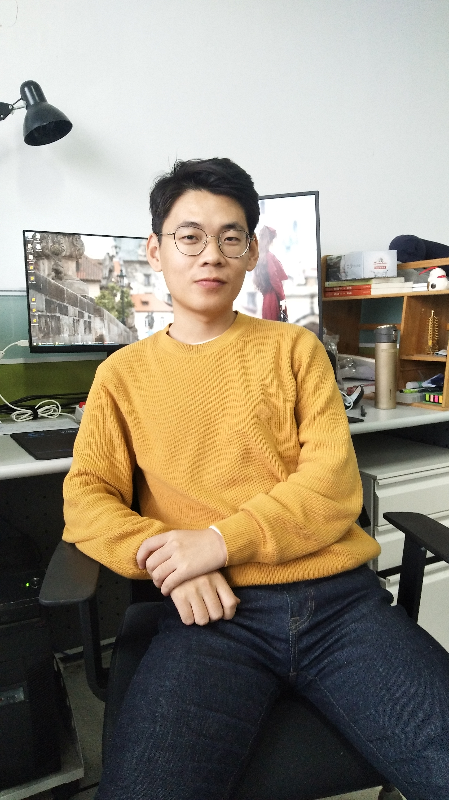

|  |
Yongqi Li
Research Assistant
School of Computer Science and Technology
72 Binhai Ave, Qingdao, Shandong, China 266237
liyongqi0@gmail.com
|
Yongqi Li is an undergraduate student in the
School of Computer Science and Technology,
Shandong University. His research interests
include information retrieval and data mining.
Education
| Shandong University Bachelor in Computer Science and Technology Sep 2015 - June 2019 Advisor: Prof. Liqiang Nie |
Experiences
| Research Assistant, Shandong University, October 2017 - Present Advisior: Prof. Liqiang Nie |
Publications
In the Year of 2019:| Routing Micro-videos via A Temporal Graph-guided Recommendation System
Yongqi Li, Meng Liu, Jianhua Yin, Chaoran Cui, Xinshun-Xu & Liqiang Nie ACM MM 2019 (Full) |
Honors
|
Second Prize, 2017 Intel Cup National Collegiate Software Innovation Contest First Prize, Qilu software competition Third Prize, National Collegiate digital media technology works competition Second Prize, China Undergraduate Mathematical Contest in Modeling Mathematical Contest in Modeling Honourable Mention National Encouragement Scholarship The second scholarship |
Projects
|
Learning to Score Diving Sports
- Second Prize, 2017 Intel Cup National Collegiate Software Innovation Contest - Codes |
|
Smart Medical Kit
- First Prize, Qilu software competition - Third Prize, National Collegiate digital media technology works competition - Codes |
Patent
|
Learning to Score Diving Sports
- Yongqi Li, Cunxiao Du and Liqiang Nie |
|
Explicit Interaction Model towards Text Classification
- Cunxiao Du, Fuli Feng, Zhaozheng Chen and Yongqi Li |
Last update: July 24, 2019 .